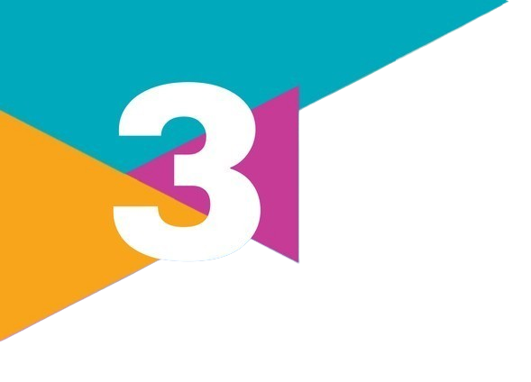

Nossas culturas
1.
A ideia de cultura está muito presente no cotidiano das pessoas e pode apresentar diferentes significados, de acordo com o contexto e o ponto de vista. Sabendo disso, responda:
a) De acordo com o senso comum, o que a cultura representa?
b) Como a Antropologia define o conceito de cultura?
c) A forma como você compreende a cultura mudou após os estudos do capítulo ou permanece como você já compreendia anteriormente? Explique sua resposta.
a) De acordo com o senso comum, o que a cultura representa?
b) Como a Antropologia define o conceito de cultura?
c) A forma como você compreende a cultura mudou após os estudos do capítulo ou permanece como você já compreendia anteriormente? Explique sua resposta.
2.
Você já presenciou alguma situação em que as pessoas definiram cultura de acordo com o senso comum? Converse com seus colegas sobre essa situação, refletindo sobre o contexto em que ela ocorreu.
3.
Analise a imagem a seguir.
A imagem está relacionada ao conceito de etnocentrismo ou de relação intercultural? Explique sua resposta diferenciando os dois conceitos.
Missa católica com elementos da cultura afrobrasileira e de religiões de matrizes africanas. São José dos Campos (SP).
A imagem está relacionada ao conceito de etnocentrismo ou de relação intercultural? Explique sua resposta diferenciando os dois conceitos.
4.
Converse com um colega a respeito do que ela significa, principalmente em sociedades multiculturais. Escreva um parágrafo que sintetize as conclusões a que chegaram.
O sociólogo brasileiro Boaventura de Sousa Santos (1940-) propõe um pensamento que contribui muito para a valorização do respeito às diferenças.
[...] temos o direito a ser iguais sempre que a diferença nos inferioriza; temos o direito de ser diferentes sempre que a igualdade nos descaracteriza.
SANTOS, B. de S. Reconhecer para libertar: os caminhos do cosmopolitanismo multicultural. Rio de Janeiro: Civilização Brasileira, 2003. p. 56.
Converse com um colega a respeito do que ela significa, principalmente em sociedades multiculturais. Escreva um parágrafo que sintetize as conclusões a que chegaram.
5.
(Enem – 2020)
Uma civilização é a entidade cultural mais ampla. As aldeias, as regiões, as etnias, as nacionalidades, os segmentos religiosos, todos têm culturas distintas em diferentes níveis de heterogeneidade cultural. A cultura de um vilarejo no sul da Itália pode ser diferente da de um vilarejo no norte da Itália, mas ambos compartilharam uma cultura italiana comum que os distingue de vilarejos alemães. As comunidades europeias, por sua vez, compartilharão aspectos culturais que as distinguem das comunidades chinesas ou hindus.
a) atemporalidade dos valores universais.
b) globalização do mundo contemporâneo.
c) fragmentação das ações políticas.
d) centralização do poder estatal.
e) identidade dos grupos sociais.
Uma civilização é a entidade cultural mais ampla. As aldeias, as regiões, as etnias, as nacionalidades, os segmentos religiosos, todos têm culturas distintas em diferentes níveis de heterogeneidade cultural. A cultura de um vilarejo no sul da Itália pode ser diferente da de um vilarejo no norte da Itália, mas ambos compartilharam uma cultura italiana comum que os distingue de vilarejos alemães. As comunidades europeias, por sua vez, compartilharão aspectos culturais que as distinguem das comunidades chinesas ou hindus.
HUNTINGTON, S. P. O choque de civilizações. Rio de Janeiro: Objetiva, 1997.
a) atemporalidade dos valores universais.
b) globalização do mundo contemporâneo.
c) fragmentação das ações políticas.
d) centralização do poder estatal.
e) identidade dos grupos sociais.
6.
O mural a seguir foi pintado no século XVI, no México, e retrata como teria sido o encontro entre o colonizador espanhol Hernán Cortés e o último governante do Império Asteca, Montezuma II. Analise a obra com atenção e faça o que se pede.
a) Como europeus e astecas são representados no mural acima?
b) Comparando o mural acima com a charge "Da Cidade do Cabo ao Cairo", apresentada na página 47, podemos afirmar que há diferença com relação à forma como são representadas as populações não europeias nas duas obras? Justifique sua resposta.
Autor desconhecido. Encontro em Tenochtitlan entre Hernán Cortés e Montezuma II, 1519.
a) Como europeus e astecas são representados no mural acima?
b) Comparando o mural acima com a charge "Da Cidade do Cabo ao Cairo", apresentada na página 47, podemos afirmar que há diferença com relação à forma como são representadas as populações não europeias nas duas obras? Justifique sua resposta.